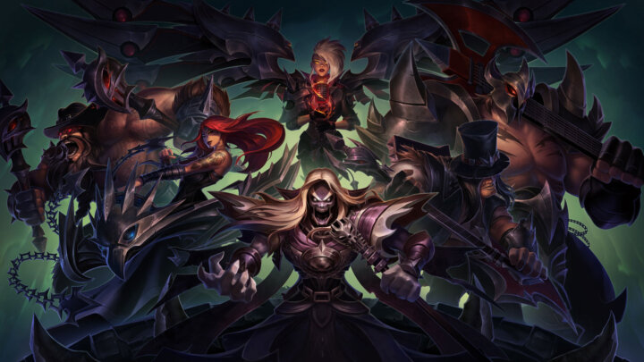
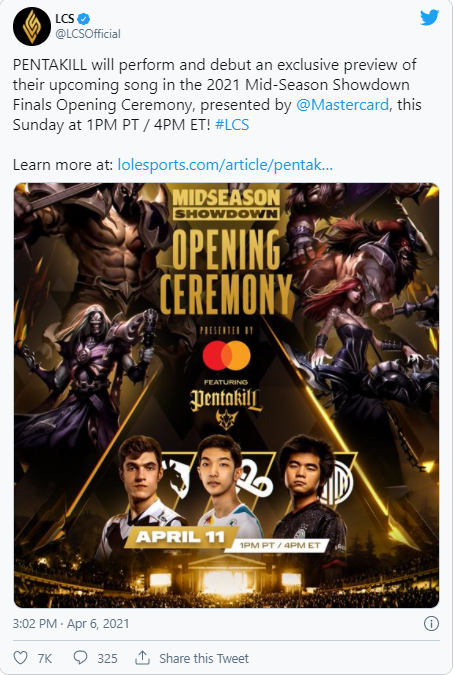

PENTAKILL to make a comeback during LCS Mid-Season Showdown Opening Ceremony
Riot Games has announced that their League of Legends band PENTAKILL will be returning for the opening ceremony of the LCS Mid-Season Showdown.
As we’re still waiting to attend League of Legends events in person again, the LCS will crown a winner on-stage again for the first time since 2019. All the while PENTAKILL will make a return, entertaining fans with their first new track in three years. They’ll be performing live with the help of Norwegian rock star Jørn Lande, with the song itself scheduled to be released later in 2021.
With PENTAKILL returning to the stage, Riot Games also announced a partnership with guitar brand Jackson, with more information about the partnership coming later this year. Fans can catch the performance on Sunday, before the start of the LCS Mid-Season Showdown Grand Final. “After more than three years in the death realm, PENTAKILL – Riot Games’ virtual heavy metal band – are returning to the stage this Sunday, April 11 at 1pm PT at the historic Los Angeles Greek Theatre.”
Despite the live performance, the ceremony itself will still be limited due to COVID-19 protocol. “To deliver the best (and safest) show possible, the ceremonies will not have an audience. Only essential staff and talent will be on-site at the Greek Theatre, and we’ll be following strict COVID-19 protocols.”